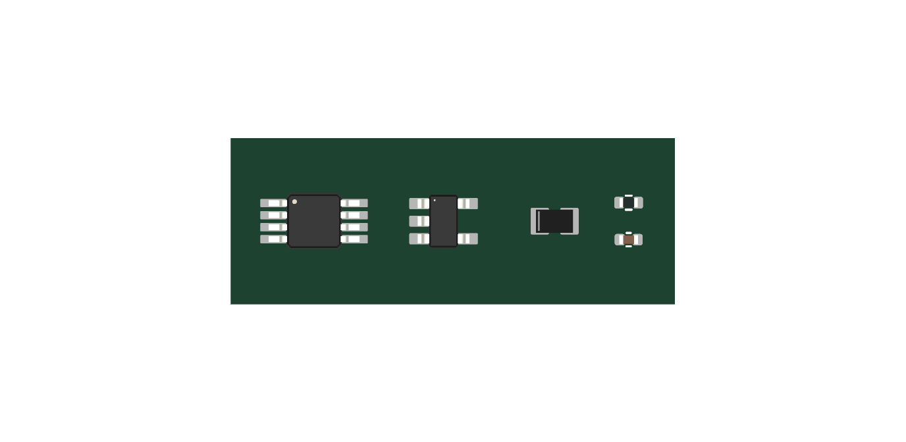
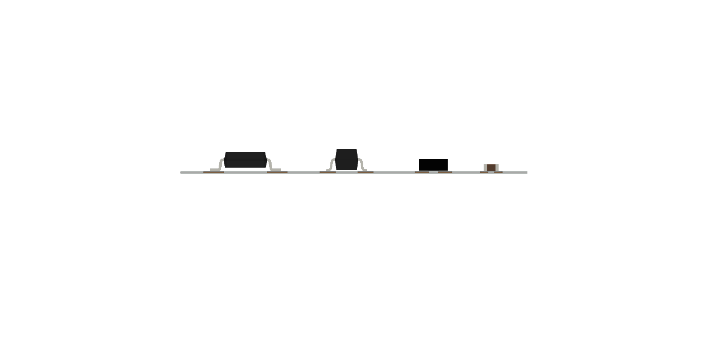
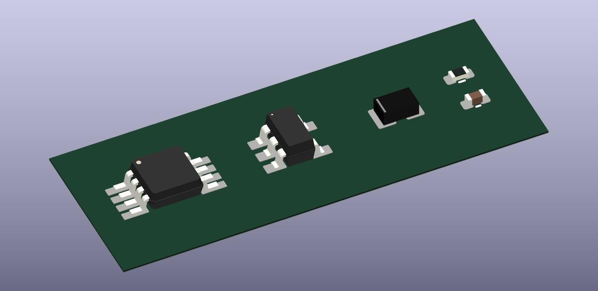
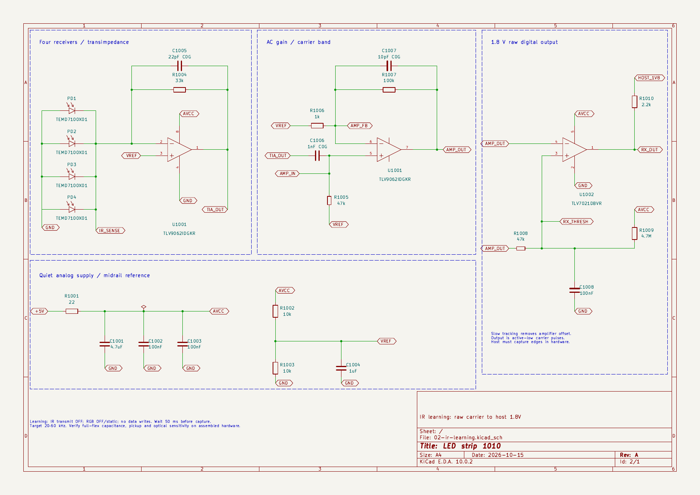

16 new orderable KSL parts, plus existing Yageo 47kΩ. All linked to local English manufacturer PDFs. Downloaded JLC CAD first; corrected against package drawings and KiCad nominal packages.
Left to right: TLV9062 DGK8, TLV7021 DBV5, TEMD7100X01, resistor0402, capacitor0402. Top/front views share the same scale; isometric view is illustrative. All models sit above the0.12mm test substrate.



| Part | Source-backed facts and corrections | Model limits |
|---|---|---|
| TEMD7100X01 | Vishay81960 Rev1.3 p4: body2×1.25×0.85mm; copper pads1×1.45mm, center spacing1.60mm, K=1/A=2. JLC import had incorrect3.2mm copper span; corrected to2.6mm. Added incoming-light arrows to symbol. | Replaced wrong1.1mm-high JLC model with nominal opaque IR-filtered package0.85mm tall and terminals. Cathode stripe illustrative; optical transfer and exact molding not qualified. |
| TLV9062IDGKR | TI DGK0008A package appendix:3×3mm body,0.65mm pitch;8 pads1.4×0.45mm atX±2.2. TI pin table matches symbol and footprint. | Stock KiCad VSSOP-8 nominal body/leads; manufacturer-specific markings omitted. Pin1 upper left. |
| TLV7021DBVR | TI DBV0005A appendix:1.6×2.9mm nominal body;5 pads1.1×0.6mm atX±1.3;Y±0.95/0. Generic import corrected to exact TI recommended lands. OUT pin1 is open-collector electrical type. | Stock KiCad SOT-23-5 nominal body/leads, pin1 upper left; not exact mold marking. |
| 0402 passives | Uniroyal WG family:1/16W,1%,50V,1×0.5mm body. Samsung CL05 family:1×0.5mm body; voltage/dielectric decoded by exact SKU. Imported CAD normalized to stock KiCad IPC nominal lands: resistor0.54×0.64mm centers±0.51; capacitor0.56×0.62mm centers±0.48. Nonpolar. | Nominal KiCad0402 model; exact capacitor thickness varies by SKU. Stock model is for placement visualization, not a maximum-height qualification. |
| MPN | Value | LCSC | Footprint |
|---|---|---|---|
| TEMD7100X01 | TEMD7100X01 | C145452 | Sensor_KSL:PHOTODIODE-0805_TEMD7100X01 |
| TLV9062IDGKR | TLV9062IDGKR | C398356 | Amplifier_Comparator_KSL:VSSOP-8_TLV9062_DGK0008A |
| TLV7021DBVR | TLV7021DBVR | C2860939 | Amplifier_Comparator_KSL:SOT-23-5_TLV7021_DBV |
| 0402WGF220JTCE | 22 | C25092 | Resistor_KSL:R_0402_1005Metric_Receiver |
| 0402WGF1002TCE | 10k | C25744 | Resistor_KSL:R_0402_1005Metric_Receiver |
| 0402WGF3302TCE | 33k | C25779 | Resistor_KSL:R_0402_1005Metric_Receiver |
| RC0402FR-0747KL | 47k | C93943 | Resistor_KSL:R_0402_Yageo_RT |
| 0402WGF1001TCE | 1k | C11702 | Resistor_KSL:R_0402_1005Metric_Receiver |
| 0402WGF1003TCE | 100k | C25741 | Resistor_KSL:R_0402_1005Metric_Receiver |
| 0402WGF4704TCE | 4.7M | C474132 | Resistor_KSL:R_0402_1005Metric_Receiver |
| 0402WGF2201TCE | 2.2k | C25879 | Resistor_KSL:R_0402_1005Metric_Receiver |
| CL05A475MP5NRNC | 4.7uF | C23733 | Capacitor_KSL:C_0402_1005Metric_Receiver |
| CL05B104KO5NNNC | 100nF | C1525 | Capacitor_KSL:C_0402_1005Metric_Receiver |
| CL05A105KA5NQNC | 1uF | C52923 | Capacitor_KSL:C_0402_1005Metric_Receiver |
| CL05C220JB5NNNC | 22pF C0G | C70464 | Capacitor_KSL:C_0402_1005Metric_Receiver |
| CL05C102JB5NNNC | 1nF C0G | C307441 | Capacitor_KSL:C_0402_1005Metric_Receiver |
| CL05C100JB5NNNC | 10pF C0G | C32949 | Capacitor_KSL:C_0402_1005Metric_Receiver |

Four photodiodes parallel into33kΩ/22pF TIA; AC-coupled gain101; comparator follows slow amplifier baseline plus nominal25mV offset. This avoids the amplified op-amp DC offset falsely setting the comparator state. Pull-up is2.2kΩ to host1.8V; output is active-low raw carrier.
KiCad native sheet pin/net parity checked; rendered schematic inspected; zero text/grid/wire-spacing findings. Model gate: zero new defects;17 unrelated pre-existing baseline exceptions. NDA tree gate passes. Datasheet gate: all new parts confirmed English;51 unrelated library issues remain, preserved in log. Raw CAD and datasheet findings are recorded; manufacturer land patterns checked directly.
Calculated target20–60kHz at total sense capacitance≤500pF: first-order model phase margin65.9°, gain2.37–3.12MΩ. This is an analytic model, not measured optical range or vendor SPICE qualification. Four sensors are combined, not individually selectable. Learning requires transmitters OFF, RGB OFF/static, no LED serial writes,50ms settling, and hardware edge capture at the SoM. Validate carrier fidelity, ambient overload recovery, distributed-line pickup and sensitivity on the assembled flex.
Sources: Vishay TEMD7100X01; TI TLV9062; TI TLV7021. Passive manufacturer PDF provenance is in datasheet-verdicts.json. Stock KiCad libraries are CC-BY-SA4.0 with KiCad exception; copied nominal package models preserve that provenance.